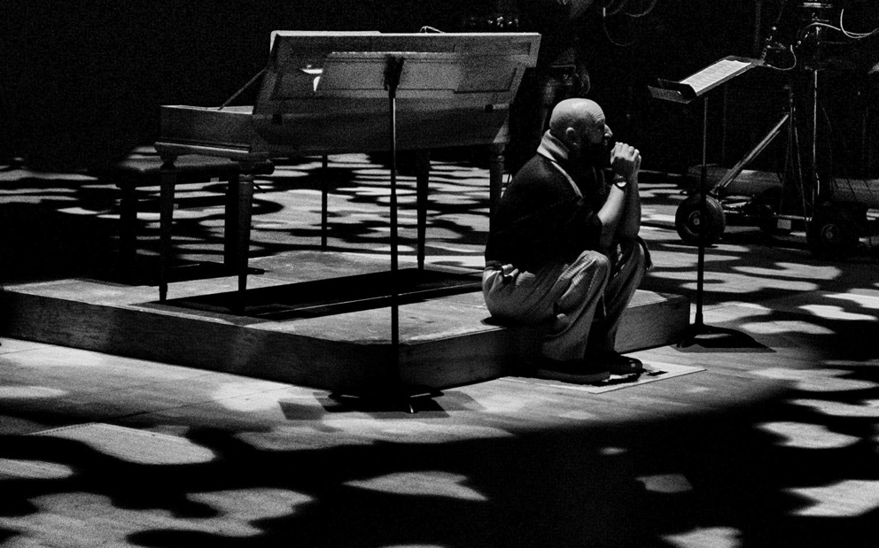

2026 · OUR Recordings
Ravel Abroad
Odense Symphony Orchestra
“The further I progress, the freer I feel”
Pierre Bleuse is Music Director of the Ensemble intercontemporain and Artistic Director of the Pablo Casals Festival in Prades. Chief Conductor of the Odense Symphony Orchestra from 2021 to 2026, he is a guest of orchestras including the Royal Concertgebouw Orchestra, the London Philharmonic Orchestra, the Orchestre de Paris and the Tokyo Symphony Orchestra.
A violinist by training, he brings the same attention to the great symphonic repertoire and to the music of today, letting works speak to one another rather than setting them apart.

2026/27 season
2026 · OUR Recordings
Odense Symphony Orchestra
2026 · Alpha Classics
Ensemble intercontemporain
2026 · Dacapo
Rafaell Altino, Odense Symphony Orchestra
2024 · Alpha Classics
Ensemble intercontemporain
Diapason d'or of the year, Choc de Classica
« Sous sa baguette, la partition la plus dense devient lisible comme une page d’écriture. »An interview with the music director of the Ensemble intercontemporain, between two rehearsals, on passing on today’s repertoire.
8 October 2026
“Precise without ever being cold, this is Ligeti with a pulse.”The reviewer praises a reading of the concertos both rigorous and lyrical, served by a recording of great transparency.
19 September 2026
„Ein Dirigent, der zuhört, bevor er gestaltet.“A concert review with the SWR Symphonieorchester, in which the Symphonie fantastique regains its share of dream and unease.
2 July 2026
« Le Festival Pablo Casals a trouvé en lui un hôte autant qu’un directeur. »A look back at the 2026 Pablo Casals Festival, its programme between chamber music and premieres, set in the abbey of Saint-Michel-de-Cuxa.
14 August 2026
« Une architecture sonore qui tourne autour de l’auditeur, et le tient en haleine. »At the Philharmonie de Paris, the Ensemble intercontemporain revives Pierre Boulez’s emblematic work in a spatialised set-up.
27 May 2026
“Every colour in its place, every gesture with a purpose.”The launch concert of the Unsuk Chin album, between the soloists’ virtuosity and the ensemble’s cohesion.
11 March 2026
« Un Ravel voyageur, d’une élégance qui n’exclut jamais le risque. »The Ravel Abroad album sheds light on the echoes of America and Spain in the composer’s work.
23 January 2026

The month's concerts and news, once a month.
Worldwide general management
François Guyard
Senior Director, General Manager HarrisonParrott Paris
Communications